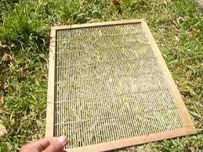

Ahumador

Cepillo para desabejar
Cera estampada

Extractor de miel

Elementos para la fundición de la cera

Piquera

Pinza o palanca para el manejo de cuadros
Rejilla excluidora de reinas
Traje de apicultor